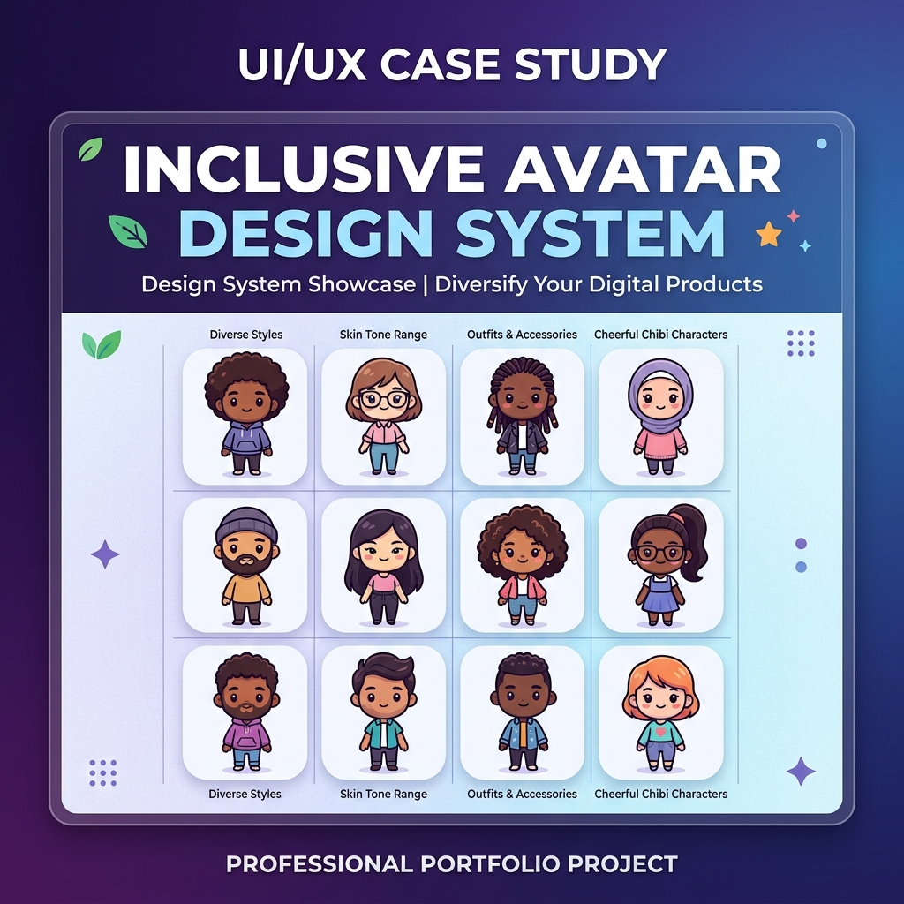
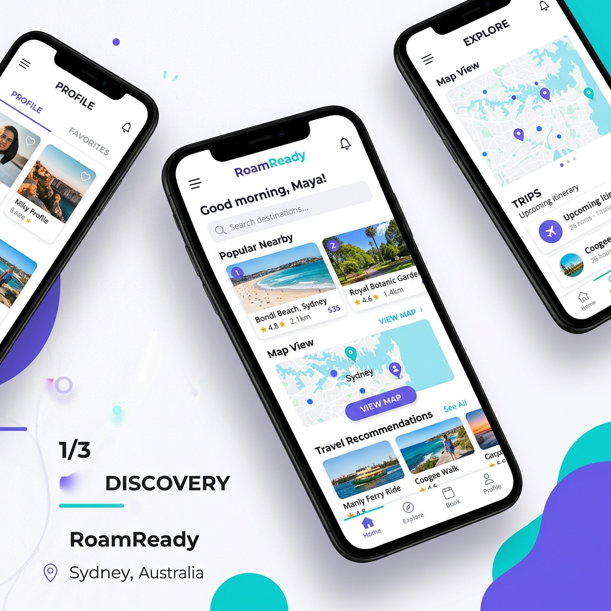
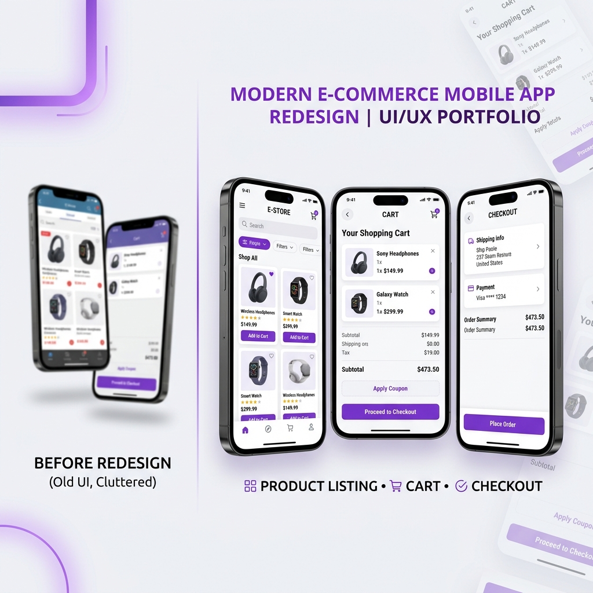

UI/UX Designer & EEE Student
Passionate about creating intuitive, accessible, and engaging digital experiences. I transform ideas into user-friendly solutions through research, creativity, and thoughtful design.
Getting to know the person behind the designs
Design is not just what it looks like. Design is how it works — and more importantly, how it makes people feel.
I am Vijaya Sountharya Thamotharan, a UI/UX Designer and Electrical & Electronics Engineering student passionate about creating intuitive, accessible, and engaging digital experiences. Through Figma and Canva, I transform ideas into user-friendly interfaces while focusing on usability, inclusivity, accessibility, and visual design.
My journey into UI/UX design began with a deep curiosity about how people interact with technology. Coming from an engineering background, I bring a unique analytical perspective to design challenges, combining systematic thinking with creative problem-solving. I believe that great design should be invisible — it should feel so natural that users don't even notice it.
My design philosophy centers around empathy and inclusion. Every design decision I make starts with understanding the user — their needs, frustrations, and goals. I aspire to bridge the gap between technology and people, creating digital products that are not only beautiful but truly meaningful and accessible to everyone.
Empathy-driven, user-first approach to every project
Aspiring to create impactful digital products at scale
Solving real-world problems through thoughtful design
Continuously growing through courses and challenges
Detailed deep dives into my design process and thinking



These projects demonstrate my ability to solve real user problems through research, wireframing, prototyping, and visual design. Each case study showcases my complete design process:
A structured approach to solving design problems with empathy and creativity
Understanding users, market, and context
Brainstorming creative solutions
Defining target user archetypes
Mapping journeys and interactions
Creating low-fidelity structures
Crafting high-fidelity visuals
Building interactive prototypes
Validating through user feedback
Polished, user-centered design
The tools and methodologies I use to create exceptional user experiences
Continuous learning and professional development milestones
Completed comprehensive UI/UX design courses covering end-to-end design thinking, wireframing, prototyping, and visual design principles.
Participated in multiple design challenges to sharpen skills, explore new design patterns, and push creative boundaries under constraints.
Attended hands-on workshops on Figma, design systems, accessibility, and user research methodologies from industry professionals.
Collaborated in hackathons combining engineering and design skills to create innovative solutions within tight deadlines.
Recognized for outstanding performance in academic projects, technical events, and design-related activities at the university level.
Competed in design competitions demonstrating creative problem-solving, visual storytelling, and user-centered design thinking.
Feedback from mentors, faculty, and collaborators
Vijaya demonstrates exceptional attention to detail in her design work. Her ability to empathize with users and translate their needs into intuitive interfaces is remarkable for someone at her stage of learning.
Working with Vijaya on team projects has been a great experience. She brings a unique perspective combining her engineering mindset with creative design thinking. Always eager to learn and contribute meaningfully.
Vijaya's dedication to understanding user needs before jumping into design solutions sets her apart. Her research-driven approach and attention to accessibility show real maturity in her design practice.
A promising designer who consistently delivers thoughtful solutions. Vijaya's willingness to iterate based on feedback and her commitment to continuous learning make her an excellent candidate for any design role.
Recruiters often spend more time reviewing detailed case studies than visual styling alone. This portfolio focuses on documenting practical UI/UX thinking and design maturity through:
Let's create meaningful experiences together
I'm always excited to discuss new design opportunities, collaborate on interesting projects, or simply chat about UI/UX design. Feel free to reach out through any of the channels below or fill out the contact form.